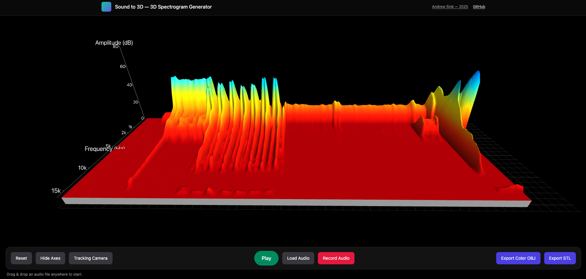
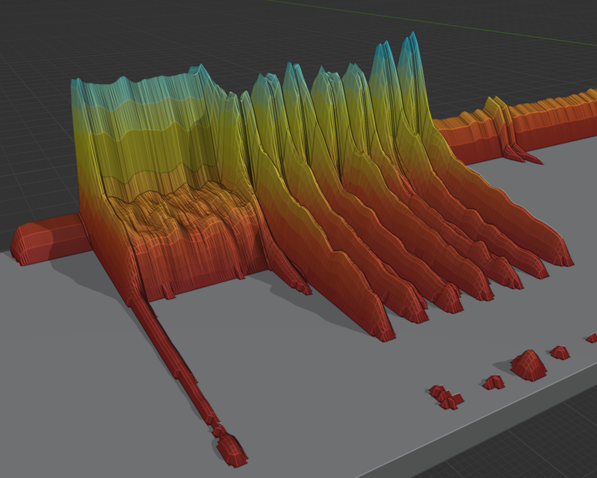

A web-based tool that generates a 3D printable model from an audio file.
My goal for this project was to allow users to create a 3D printable model from an audio file, without needing to use a 3D modeling software. In addition, a camera tracking mode was added for content creators to use for making compelling visualizations.
Inspired by a Tweet from Joel Telling.

3D representation of audio frequency data

Mesh OBJ with color viewed in Blender
Realtime visualization